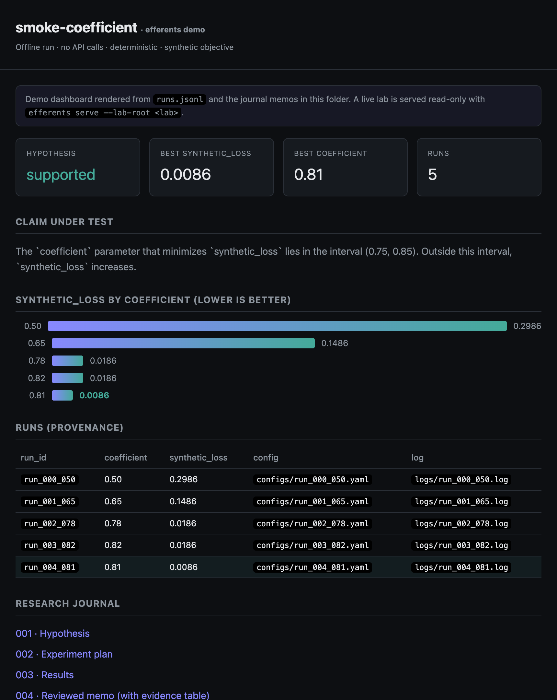

efferents runs bounded experiments on your compute and writes reviewed research memos with provenance — a research memory your team can trust.
$ efferents demo smoke-lab # offline, no API key
$ open efferents-demo/dashboard.html
efferents.yaml —
your train/eval commands, the metric to move,
and budget + approval guardrails.run_id, a metric file, a log, or a diff — not a vibe.One command produces a full lab journal. Below is the
actual dashboard.html from efferents demo smoke-lab
— a real screenshot, not a mockup.

journal/001_hypothesis.md
journal/002_experiment_plan.md
journal/003_results.md
journal/004_reviewed_memo.md
runs.jsonl
claims.jsonl
We're onboarding a small number of ML / R&D teams who run a lot of internal experiments and want an autonomous lab on their own hardware. You bring a repo and a metric; we wire up efferents with you.
Read https://efferents.com/intake.md and follow it